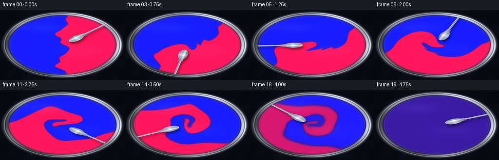
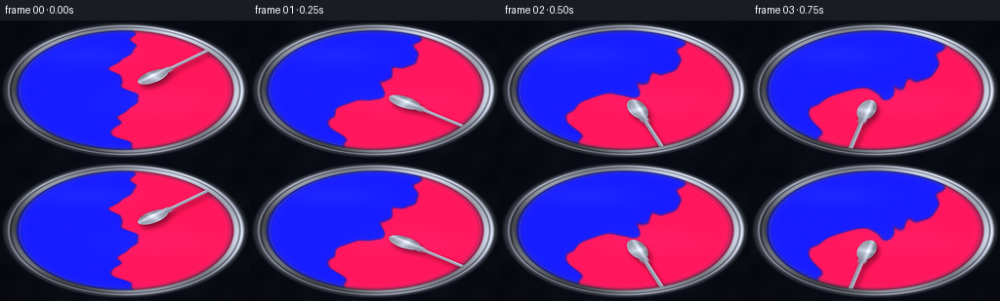
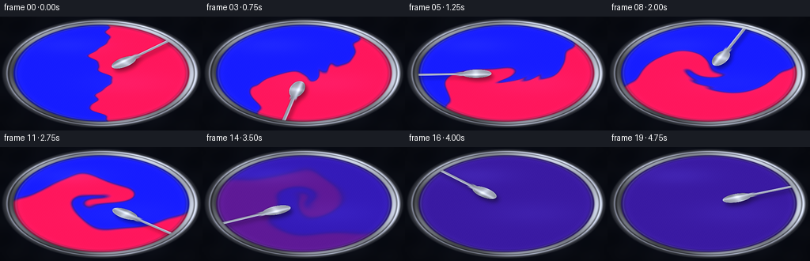

CODING AGENTS AS PIXEL WORLD MODELS
traex/DeepSeek-V4.1-Flash · material_0004
点击播放 · 原生 RGB 像素
逐轮保存的候选
回放视频、检查图与代码变化。
每份候选均可单独播放。实际图片检查记录在下方工具轨迹中。
候选 01播放与检查图
点击播放 · 原生 RGB 像素

展开代码变化
--- 上一保存版本 +++ 本次保存版本 @@ -0,0 +1,313 @@ +from pathlib import Path + +import numpy as np +from PIL import Image +from scipy.ndimage import gaussian_filter, map_coordinates + +import artifact_io + + +CASE_DIR = Path(__file__).resolve().parent +OUT_W, OUT_H = 256, 144 +N_FRAMES = 20 +FPS = 4.0 +SS = 2 +W, H = OUT_W * SS, OUT_H * SS +DT = 1.0 / FPS +SUBSTEPS = 8 + + +def smoothstep(edge0, edge1, value): + x = np.clip((value - edge0) / (edge1 - edge0), 0.0, 1.0) + return x * x * (3.0 - 2.0 * x) + + +def srgb_to_linear(color): + color = np.asarray(color, dtype=np.float32) + return np.where(color <= 0.04045, color / 12.92, ((color + 0.055) / 1.055) ** 2.4) + + +def linear_to_srgb(color): + color = np.maximum(color, 0.0) + return np.where(color <= 0.0031308, color * 12.92, 1.055 * color ** (1.0 / 2.4) - 0.055) + + +BLUE = srgb_to_linear([0.015, 0.145, 0.98]) +MAGENTA = srgb_to_linear([0.97, 0.012, 0.52]) +VIOLET = srgb_to_linear([0.39, 0.025, 0.72]) + + +def color_for_concentration(c): + lower = c < 0.5 + t_low = np.clip(c * 2.0, 0.0, 1.0)[..., None] + t_high = np.clip((c - 0.5) * 2.0, 0.0, 1.0)[..., None] + low_mix = BLUE + (VIOLET - BLUE) * t_low + high_mix = VIOLET + (MAGENTA - VIOLET) * t_high + return np.where(lower[..., None], low_mix, high_mix) + + +def velocity_field(x, y, t): + cx, cy = W * 0.5, H * 0.495 + rx, ry = W * 0.475, H * 0.465 + qx = (x - cx) / rx + qy = (y - cy) / ry + radius = np.sqrt(qx * qx + qy * qy) + envelope = np.clip(1.0 - radius * radius, 0.0, 1.0) + envelope = envelope * envelope + + # A fast inner vortex and a slower outer rotation stretch the pigment seam. + omega = 0.55 + 1.65 * np.exp(-(radius / 0.42) ** 2) + omega += 0.20 * np.sin(2.0 * np.pi * (0.58 * t + 0.08)) + vx = -qy * omega + vy = qx * omega + + # Several wandering vortices break the symmetry into marbled ribbons. + vortex_data = ( + (0.38, 0.74, -1.10, 0.24, 0.42), + (-0.48, 0.38, 0.90, 0.20, 0.57), + (0.55, -0.36, 0.82, 0.22, 0.71), + (-0.36, -0.62, -0.78, 0.18, 0.49), + (0.04, 0.08, 0.52, 0.16, 0.86), + ) + for i, (ox, oy, strength, scale, phase) in enumerate(vortex_data): + angle = 2.0 * np.pi * (0.11 + 0.035 * i) * t + phase + orbit = 0.10 + 0.018 * i + vcx = ox * 0.85 + orbit * np.cos(angle) + vcy = oy * 0.78 + orbit * np.sin(angle * 0.83) + dx = qx - vcx + dy = qy - vcy + falloff = np.exp(-(dx * dx + dy * dy) / (scale * scale)) + modulation = 0.78 + 0.22 * np.sin(2.0 * np.pi * (0.34 * t) + phase) + vx += -dy * strength * falloff * modulation + vy += dx * strength * falloff * modulation + + # Short shear waves make the fine, pulled-apart paint filaments. + shear_phase = 2.0 * np.pi * 0.22 * t + vx += 0.16 * np.sin(3.2 * np.pi * qy + shear_phase) * envelope + vy += 0.13 * np.sin(2.7 * np.pi * qx - 1.2 * shear_phase) * envelope + + # A small inward component keeps the two pigments moving through each other. + inward = 0.10 * smoothstep(0.05, 0.85, radius) * envelope + vx -= qx * inward + vy -= qy * inward + + # Stirring spoon creates a local wake. + spoon_angle = -0.72 + 2.05 * 2.0 * np.pi * (t / 5.0) + spoon_angle += 0.08 * np.sin(2.0 * np.pi * 0.62 * t) + sbx = 0.31 * np.cos(spoon_angle) + sby = 0.31 * np.sin(spoon_angle) + dx = qx - sbx + dy = qy - sby + wake = np.exp(-(dx * dx + dy * dy) / 0.055) + vx += -dy * 1.45 * wake + vy += dx * 1.45 * wake + + return vx * rx, vy * ry, spoon_angle + + +def make_initial_concentration(qx, qy): + seam = ( + -0.006 + + 0.095 * np.sin(2.3 * np.pi * qy + 0.55) + + 0.030 * np.sin(5.7 * np.pi * qy - 1.1) + + 0.018 * np.sin(8.3 * np.pi * qy + 0.2) + ) + signed = qx - seam + c = 0.5 + 0.5 * np.tanh(signed / 0.017) + c = np.clip(c + (0.5 - c.mean()), 0.0, 1.0) + return c + + +def draw_spoon(surface, qx, qy, angle, paint_mask): + ca, sa = np.cos(angle), np.sin(angle) + bx = 0.31 * ca + by = 0.31 * sa + dx = qx - bx + dy = qy - by + along = dx * ca + dy * sa + perp = -dx * sa + dy * ca + + bowl_r = (along / 0.155) ** 2 + (perp / 0.078) ** 2 + bowl = smoothstep(1.045, 0.955, bowl_r) + handle = ( + smoothstep(0.023, 0.014, np.abs(perp)) + * smoothstep(0.075, 0.13, along) + * smoothstep(1.08, 1.02, along) + ) + neck = smoothstep(0.047, 0.028, np.abs(perp)) * smoothstep(0.075, 0.11, along) * smoothstep(0.24, 0.16, along) + spoon = np.maximum.reduce([bowl, handle, neck]) + + # A broad soft shadow sells the spoon's height above the wet paint. + shadow_src = np.roll(np.roll(spoon, 8, axis=0), 6, axis=1) + shadow = gaussian_filter(shadow_src, sigma=5.5) + surface *= (1.0 - 0.44 * shadow[..., None] * paint_mask[..., None]) + + local_bowl = np.clip(1.0 - bowl_r, 0.0, 1.0) + chrome = 0.49 + 0.25 * np.cos(9.0 * perp - 0.8) + chrome += 0.30 * np.exp(-((perp + 0.018) / 0.020) ** 2) + chrome += 0.16 * np.exp(-((along - 0.010) / 0.035) ** 2) + chrome = np.clip(chrome, 0.27, 1.15) + spoon_color = np.stack( + [0.74 * chrome, 0.77 * chrome, 0.84 * chrome], axis=-1 + ) + spoon_color = np.clip(spoon_color + 0.18 * local_bowl[..., None], 0.0, 1.0) + + edge = np.clip(spoon - gaussian_filter(spoon, sigma=1.6), 0.0, 1.0) + spoon_color = np.clip(spoon_color + edge[..., None] * np.array([0.42, 0.44, 0.48]), 0.0, 1.0) + surface[:] = surface * (1.0 - spoon[..., None]) + spoon_color * spoon[..., None] + + # The spoon's dark outline makes it legible against the saturated paint. + outline = np.clip(gaussian_filter(spoon, sigma=2.2) - spoon, 0.0, 1.0) + surface *= 1.0 - 0.34 * outline[..., None] + + +def render_frame(c, t, spoon_angle): + cx, cy = W * 0.5, H * 0.495 + rx, ry = W * 0.475, H * 0.465 + qx = (np.arange(W, dtype=np.float32)[None, :] - cx) / rx + qy = (np.arange(H, dtype=np.float32)[:, None] - cy) / ry + qx = np.broadcast_to(qx, (H, W)) + qy = np.broadcast_to(qy, (H, W)) + radius = np.sqrt(qx * qx + qy * qy) + angle = np.arctan2(qy, qx) + + paint_mask = smoothstep(0.925, 0.902, radius) + rim_mask = smoothstep(1.012, 0.990, radius) * smoothstep(0.892, 0.918, radius) + outer_mask = smoothstep(1.045, 1.012, radius) + + yy, xx = np.mgrid[0:H, 0:W].astype(np.float32) + background = np.zeros((H, W, 3), dtype=np.float32) + bg_glow = np.exp(-((qx * 0.85) ** 2 + (qy * 0.65) ** 2) / 0.75) + background[:] = np.array([0.025, 0.032, 0.052], dtype=np.float32) + background += bg_glow[..., None] * np.array([0.030, 0.038, 0.065], dtype=np.float32) + bg_noise = ( + np.sin(xx * 0.071 + yy * 0.043) + + np.sin(xx * 0.017 - yy * 0.091) + ) * 0.004 + background += bg_noise[..., None] + + base = color_for_concentration(c) + + # Wet paint shading uses the concentration contours as very shallow ripples. + grad_y, grad_x = np.gradient(gaussian_filter(c, sigma=2.0)) + grad_x = gaussian_filter(grad_x, sigma=1.0) + grad_y = gaussian_filter(grad_y, sigma=1.0) + nx = -0.065 * grad_x + ny = -0.065 * grad_y + nz = np.ones_like(nx) + norm = np.sqrt(nx * nx + ny * ny + nz * nz) + nx, ny, nz = nx / norm, ny / norm, nz / norm + light = np.array([-0.34, -0.56, 0.76], dtype=np.float32) + light /= np.linalg.norm(light) + half = light + np.array([0.0, 0.0, 1.0], dtype=np.float32) + half /= np.linalg.norm(half) + ndoth = np.clip(nx * half[0] + ny * half[1] + nz * half[2], 0.0, 1.0) + ndotl = np.clip(nx * light[0] + ny * light[1] + nz * light[2], 0.0, 1.0) + + diffuse = 0.86 + 0.19 * ndotl + specular = 0.82 * ndoth ** 52 + 0.20 * ndoth ** 8 + softbox = 0.055 * np.exp(-(((qx + 0.34) / 0.38) ** 2 + ((qy + 0.53) / 0.16) ** 2)) + sheen = 0.035 * np.exp(-(((qx - 0.25) / 0.48) ** 2 + ((qy - 0.18) / 0.21) ** 2)) + + # Fine pigment grain is anchored to the liquid surface, with tiny moving glints. + grain = ( + 0.5 * np.sin(xx * 1.31 + yy * 0.73 + 1.8 * np.sin(yy * 0.051 + t)) + + 0.3 * np.sin(xx * 0.43 - yy * 1.77 + 0.8 * np.cos(xx * 0.027 - t)) + + 0.2 * np.sin(xx * 2.13 + yy * 1.11) + ) + grain *= 0.0075 + edge_glow = 0.10 * np.exp(-((radius - 0.875) / 0.040) ** 2) + + surface = base * diffuse[..., None] + surface += specular[..., None] * np.array([0.72, 0.77, 0.93], dtype=np.float32) + surface += (softbox + sheen)[..., None] * np.array([0.55, 0.67, 1.0], dtype=np.float32) + surface += grain[..., None] + surface += edge_glow[..., None] * np.array([0.20, 0.18, 0.27], dtype=np.float32) + surface = np.clip(surface, 0.0, 1.0) + + # A dark meniscus grounds the liquid inside the vessel. + meniscus = np.exp(-((radius - 0.902) / 0.026) ** 2) + surface *= 1.0 - 0.43 * meniscus[..., None] + inner_reflection = np.exp(-((radius - 0.891) / 0.010) ** 2) + surface += inner_reflection[..., None] * np.array([0.11, 0.12, 0.16], dtype=np.float32) + + draw_spoon(surface, qx, qy, spoon_angle, paint_mask) + + rim_shade = 0.54 + 0.23 * np.cos(angle + 0.55) + rim_shade += 0.12 * np.sin(5.0 * angle + 0.8) + rim_shade += 0.08 * np.cos(radius * 80.0) + rim_shade = np.clip(rim_shade, 0.28, 0.92) + rim_color = np.stack( + [rim_shade * 0.90, rim_shade * 0.93, rim_shade * 1.00], axis=-1 + ) + rim_groove = np.exp(-((radius - 0.965) / 0.007) ** 2) + rim_color *= 1.0 - 0.38 * rim_groove[..., None] + rim_highlight = np.exp(-((radius - 0.982) / 0.008) ** 2) + rim_color += rim_highlight[..., None] * np.array([0.28, 0.29, 0.34], dtype=np.float32) + + image = background.copy() + image = image * (1.0 - outer_mask[..., None]) + np.array([0.18, 0.19, 0.22], dtype=np.float32) * outer_mask[..., None] + image = image * (1.0 - rim_mask[..., None]) + rim_color * rim_mask[..., None] + image = image * (1.0 - paint_mask[..., None]) + surface * paint_mask[..., None] + + # Gentle vignette and a final liquid saturation lift. + vignette = 1.0 - 0.16 * smoothstep(0.85, 1.25, radius) + image *= vignette[..., None] + luminance = image.mean(axis=2, keepdims=True) + image = np.clip(luminance + (image - luminance) * 1.07, 0.0, 1.0) + + image8 = np.clip(image * 255.0 + 0.5, 0, 255).astype(np.uint8) + return np.asarray( + Image.fromarray(image8, mode="RGB").resize((OUT_W, OUT_H), Image.Resampling.LANCZOS) + ) + + +def generate(): + cx, cy = W * 0.5, H * 0.495 + rx, ry = W * 0.475, H * 0.465 + x = np.arange(W, dtype=np.float32)[None, :] + y = np.arange(H, dtype=np.float32)[:, None] + x = np.broadcast_to(x, (H, W)) + y = np.broadcast_to(y, (H, W)) + qx = (x - cx) / rx + qy = (y - cy) / ry + radius = np.sqrt(qx * qx + qy * qy) + inside = radius < 1.06 + c = make_initial_concentration(qx, qy) + c = np.where(inside, c, 0.5) + + frames = [] + sub_dt = DT / SUBSTEPS + for frame_index in range(N_FRAMES): + if frame_index == 0: + t = 0.0 + _, _, spoon_angle = velocity_field(x, y, t) + frames.append(render_frame(c, t, spoon_angle)) + for sub in range(SUBSTEPS): + t = (frame_index * SUBSTEPS + sub + 1) * sub_dt + vx, vy, spoon_angle = velocity_field(x, y, t) + sample_x = x - sub_dt * vx + sample_y = y - sub_dt * vy + coords = np.stack([sample_y, sample_x], axis=0) + c = map_coordinates(c, coords, order=1, mode="nearest", prefilter=False) + + diffusion = 0.30 + 0.86 * smoothstep(2.7, 4.85, t) + c = gaussian_filter(c, sigma=diffusion, mode="nearest") + c = np.where(inside, c, 0.5) + c = np.clip(c + (0.5 - c[inside].mean()), 0.0, 1.0) + + # Finish in a genuinely uniform purple while retaining a faint wet swirl. + final_blend = 0.90 * smoothstep(4.05, 4.95, t) + c = 0.5 + (c - 0.5) * (1.0 - final_blend) + + if frame_index > 0: + t = (frame_index + 1) * DT + frames.append(render_frame(c, t, spoon_angle)) + + frames = np.stack(frames, axis=0) + artifact_io.save(frames, CASE_DIR) + return frames + + +if __name__ == "__main__": + generate()
候选 02播放与检查图
点击播放 · 原生 RGB 像素


展开代码变化
--- 上一保存版本
+++ 本次保存版本
@@ -111,9 +111,11 @@
+ 0.095 * np.sin(2.3 * np.pi * qy + 0.55)
+ 0.030 * np.sin(5.7 * np.pi * qy - 1.1)
+ 0.018 * np.sin(8.3 * np.pi * qy + 0.2)
+ + 0.009 * np.sin(13.4 * np.pi * qy - 0.4)
)
signed = qx - seam
c = 0.5 + 0.5 * np.tanh(signed / 0.017)
+ c += 0.025 * np.sin(9.1 * np.pi * qy + 7.3 * qx) * np.exp(-(signed / 0.11) ** 2)
c = np.clip(c + (0.5 - c.mean()), 0.0, 1.0)
return c
@@ -258,7 +260,7 @@
image8 = np.clip(image * 255.0 + 0.5, 0, 255).astype(np.uint8)
return np.asarray(
- Image.fromarray(image8, mode="RGB").resize((OUT_W, OUT_H), Image.Resampling.LANCZOS)
+ Image.fromarray(image8).resize((OUT_W, OUT_H), Image.Resampling.LANCZOS)
)
@@ -291,13 +293,13 @@
coords = np.stack([sample_y, sample_x], axis=0)
c = map_coordinates(c, coords, order=1, mode="nearest", prefilter=False)
- diffusion = 0.30 + 0.86 * smoothstep(2.7, 4.85, t)
+ diffusion = 0.30 + 0.92 * smoothstep(1.65, 4.80, t)
c = gaussian_filter(c, sigma=diffusion, mode="nearest")
c = np.where(inside, c, 0.5)
c = np.clip(c + (0.5 - c[inside].mean()), 0.0, 1.0)
# Finish in a genuinely uniform purple while retaining a faint wet swirl.
- final_blend = 0.90 * smoothstep(4.05, 4.95, t)
+ final_blend = smoothstep(3.20, 4.92, t)
c = 0.5 + (c - 0.5) * (1.0 - final_blend)
if frame_index > 0:
候选 03播放与检查图
点击播放 · 原生 RGB 像素

展开代码变化
--- 上一保存版本
+++ 本次保存版本
@@ -293,13 +293,13 @@
coords = np.stack([sample_y, sample_x], axis=0)
c = map_coordinates(c, coords, order=1, mode="nearest", prefilter=False)
- diffusion = 0.30 + 0.92 * smoothstep(1.65, 4.80, t)
+ diffusion = 0.30 + 0.92 * smoothstep(1.65, 4.30, t)
c = gaussian_filter(c, sigma=diffusion, mode="nearest")
c = np.where(inside, c, 0.5)
c = np.clip(c + (0.5 - c[inside].mean()), 0.0, 1.0)
# Finish in a genuinely uniform purple while retaining a faint wet swirl.
- final_blend = smoothstep(3.20, 4.92, t)
+ final_blend = smoothstep(2.75, 4.28, t)
c = 0.5 + (c - 0.5) * (1.0 - final_blend)
if frame_index > 0:
候选 04播放与检查图
可观测工具轨迹
实际执行的命令与返回图片。
命令 1exit 0
/bin/bash -c 'cat prompt.txt'
命令 2exit 0
/bin/bash -c 'cat GENERATION_RULES.md'
命令 3exit 0
/bin/bash -c 'cat task_spec.json'
命令 4exit 0
/bin/bash -c "find . -maxdepth 2 -type f -printf '%p\\n' | sort"
命令 5exit 0
/bin/bash -c "sed -n '1,240p' artifact_io.py"
命令 6exit 0
/bin/bash -c "sed -n '1,220p' player_template.html"
命令 7exit 0
/bin/bash -c "python - <<'PY' import importlib.util for m in ['numpy','PIL','scipy','cv2','imageio','matplotlib']: print(m, bool(importlib.util.find_spec(m))) PY"
命令 8exit 0
/bin/bash -c 'command -v chafa || true'
命令 9exit 0
/bin/bash -c 'command -v viu || true'
命令 10exit 0
/bin/bash -c 'command -v ffmpeg || true'
命令 11exit 0
/bin/bash -c "python - <<'PY' import cv2 for p in ['/usr/share/fonts/truetype/dejavu/DejaVuSans.ttf','/usr/share/fonts/truetype/liberation2/LiberationSans-Regular.ttf']: import os print(p, os.path.exists(p)) PY"
命令 12exit 0
/bin/bash -c "python - <<'PY' import cv2 print(cv2.__version__) PY"
命令 13exit 0
/bin/bash -c 'python generate.py'
命令 14exit 0
/bin/bash -c "python - <<'PY'
from PIL import Image
im=Image.open('inspection.png')
print(im.size)
im.resize((im.width//2,im.height//2),Image.Resampling.LANCZOS).save('.tmp/inspection_small.png')
PY"命令 15exit 0
/bin/bash -c "python - <<'PY'
import numpy as np
from PIL import Image
from pathlib import Path
fs=sorted(Path('frames').glob('*.png'))
ims=np.stack([np.array(Image.open(p)) for p in fs])
print('shape',ims.shape,'range',ims.min(),ims.max(),'mean',ims.mean((1,2,3)).round(2))
for i in [0,1,2,4,7,10,13,16,19]:
a=ims[i]
print(i,'rgb',a.mean((0,1)).round(1),'std',a.std((0,1)).round(1),'blue>magenta',np.mean(a[:,:,2]>a[:,:,0]).round(3))
print('adjacent MAD',np.abs(np.diff(ims.astype(np.int16),axis=0)).mean((1,2,3)).round(2))
PY"命令 16exit 0
/bin/bash -c "python - <<'PY'
from PIL import Image
import numpy as np
for n in [0,5,10,15,19]:
a=np.array(Image.open(f'frames/{n:02d}.png')).astype(float)
a=np.array(Image.fromarray(a.astype('uint8')).resize((64,24),Image.Resampling.BOX))
out=[]
for row in a:
s=''
for r,g,b in row:
mx=max(r,g,b); mn=min(r,g,b)
if mx<25: ch=' '
elif mx-mn<16: ch='.' if mx<90 else 'o'
elif b>r*1.35 and b>g*1.8: ch='B'
elif r>b*0.8 and b>g*1.7: ch='M'
elif b>g*1.7: ch='p'
elif r>g*1.5 and b>g*1.5: ch='v'
elif mx>190: ch='*'
else: ch='?'
s+=ch
out.append(s.rstrip())
print('\\nFRAME',n)
print('\\n'.join(out))
PY"命令 17exit 0
/bin/bash -c "python - <<'PY'
import numpy as np
from PIL import Image
for n in [0,5,10,15,19]:
a=np.array(Image.open(f'frames/{n:02d}.png'))
pts=[(128,72),(80,60),(180,80),(128,110),(55,72),(200,50)]
print(n,[tuple(a[y,x]) for x,y in pts])
PY"命令 18exit 0
/bin/bash -c "python - <<'PY'
import numpy as np
from PIL import Image
from pathlib import Path
for i,p in enumerate(sorted(Path('frames').glob('*.png'))):
a=np.array(Image.open(p)).astype(np.float32)
# central bowl only
c=a[10:134,10:246]
sat=c.max(2)-c.min(2)
mixed=(sat>25)&(c[:,:,0]>60)&(c[:,:,2]>60)&(c[:,:,1]<100)
strong=(sat>120)
print(f'{i:02d} mixed={mixed.mean():.3f} strong={strong.mean():.3f} mean={c.mean():.1f} edge={np.abs(np.diff(c.mean(2),axis=1)).mean():.2f}')
PY"命令 19exit 0
/bin/bash -c "python - <<'PY'
import numpy as np
from PIL import Image
from pathlib import Path
fs=[np.array(Image.open(p)).astype(np.float32) for p in sorted(Path('frames').glob('*.png'))]
a=fs[0]
for i in range(20):
print(i, np.abs(fs[i]-a).mean().round(2), np.abs(fs[i]-fs[i-1]).mean().round(2) if i else 0)
PY"命令 20exit 0
/bin/bash -c "python - <<'PY'
import numpy as np
from PIL import Image
for n in [0,5,10,15,17,18,19]:
a=np.array(Image.open(f'frames/{n:02d}.png'))
for x,y in [(128,72),(100,72),(156,72)]: print(n,x,y,a[y,x])
print()
PY"命令 21exit 0
/bin/bash -c "python - <<'PY'
from PIL import Image
im=Image.open('frames/10.png')
im.resize((768,432),Image.Resampling.NEAREST).save('.tmp/frame10_big.png')
PY"命令 22exit 0
/bin/bash -c "python - <<'PY' import generate, numpy as np for c in [0,0.1,0.25,0.35,0.45,0.5,0.55,0.75,1]: x=generate.color_for_concentration(np.array(c)) print(c,np.round(generate.linear_to_srgb(x)*255).astype(int)) PY"
命令 23exit 0
/bin/bash -c "python - <<'PY'
import numpy as np
from PIL import Image
from pathlib import Path
for n in [0,5,10,15,16,17,18,19]:
a=np.array(Image.open(f'frames/{n:02d}.png'))
# central disk approx 65 radius
yy,xx=np.mgrid[:144,:256]; m=(xx-128)**2/120**2+(yy-72)**2/65**2<0.8
c=a[m].astype(float)
from scipy.ndimage import gaussian_filter
g=gaussian_filter(c.mean(1),1)
print(n,'p10/50/90',np.percentile(c.mean(1),[10,50,90]).round(0),'spatial smooth',np.abs(np.diff(g)).mean().round(2))
PY"命令 24exit 0
/bin/bash -c 'mkdir -p candidates/candidate_01 && cp -a frames candidates/candidate_01/frames && cp inspection.png transition_check.png index.html pixels.npz candidates/candidate_01/'
命令 25exit 0
/bin/bash -c 'rg -n "seam =|diffusion =|final_blend =|Image.fromarray" generate.py'
命令 26exit 0
/bin/bash -c 'python generate.py'
命令 27exit 0
/bin/bash -c "python - <<'PY'
import numpy as np
from PIL import Image
from pathlib import Path
from scipy.ndimage import gaussian_filter
fs=[np.array(Image.open(p)).astype(np.float32) for p in sorted(Path('frames').glob('*.png'))]
a=fs[0]
print('frame meanRGB center std adjacent delta')
for i,f in enumerate(fs):
c=f[8:136,8:248]
print(f'{i:02d}',f.mean((0,1)).round(1),c.std().round(1),round(float(np.abs(f-a).mean()),2),round(float(np.abs(f-fs[i-1]).mean()),2) if i else 0)
PY"命令 28exit 0
/bin/bash -c 'mkdir -p candidates/candidate_02 && cp -a frames candidates/candidate_02/frames && cp inspection.png transition_check.png index.html pixels.npz candidates/candidate_02/'
命令 29exit 0
/bin/bash -c 'python generate.py'
命令 30exit 0
/bin/bash -c "python - <<'PY'
import numpy as np
from PIL import Image
from pathlib import Path
fs=[np.array(Image.open(p)).astype(np.float32) for p in sorted(Path('frames').glob('*.png'))]
a=fs[0]
print('frame meanRGB center std cumulative delta adjacent delta')
for i,f in enumerate(fs):
c=f[8:136,8:248]
print(f'{i:02d}',f.mean((0,1)).round(1),c.std().round(1),round(float(np.abs(f-a).mean()),2),round(float(np.abs(f-fs[i-1]).mean()),2) if i else 0)
PY"命令 31exit 0
/bin/bash -c "python - <<'PY'
from PIL import Image
import numpy as np
for n in [0,6,12,19]:
a=np.array(Image.open(f'frames/{n:02d}.png').resize((48,27),Image.Resampling.BOX))
print(f'FRAME {n:02d}')
for row in a:
for r,g,b in row:
print(f'\\x1b[48;2;{r};{g};{b}m ',end='')
print('\\x1b[0m')
PY"命令 32exit 0
/bin/bash -c "python - <<'PY'
import json, numpy as np
from pathlib import Path
from PIL import Image
spec=json.loads(Path('task_spec.json').read_text())
z=np.load('pixels.npz')['pixels']
print('pixels',z.shape,z.dtype)
print('expected',(spec['height'],spec['width'],spec['frames']))
frames=sorted(Path('frames').glob('*.png'))
print('png count',len(frames),'sizes',sorted({Image.open(p).size for p in frames}))
print('inspection',Image.open('inspection.png').size,'transition',Image.open('transition_check.png').size)
print('html bytes',Path('index.html').stat().st_size,'ready token', 'window.__pixelReady=true' in Path('index.html').read_text())
# Reconstruct packed pixels and compare exactly with PNGs.
rec=np.stack([(z[:,:,i]>>16)&255 for i in range(z.shape[2])],axis=2)
# transpose shape from H,W,N to N,H,W
rec=np.transpose(rec,(2,0,1))
actual=np.stack([np.array(Image.open(p))[:,:,0] for p in frames])
print('packed red equals png',np.array_equal(rec,actual))
PY"命令 33exit 0
/bin/bash -c 'git status --short'
保存候选 4 份；完成命令 33 次；可验证图片返回 0 张。原始 API 响应与完整日志保留在本地。